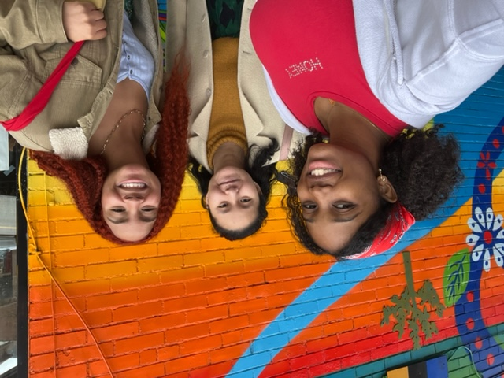
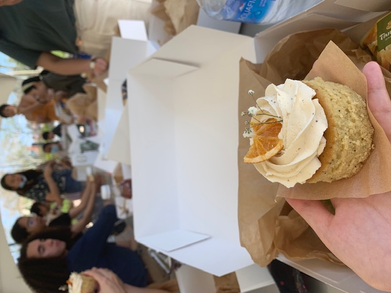
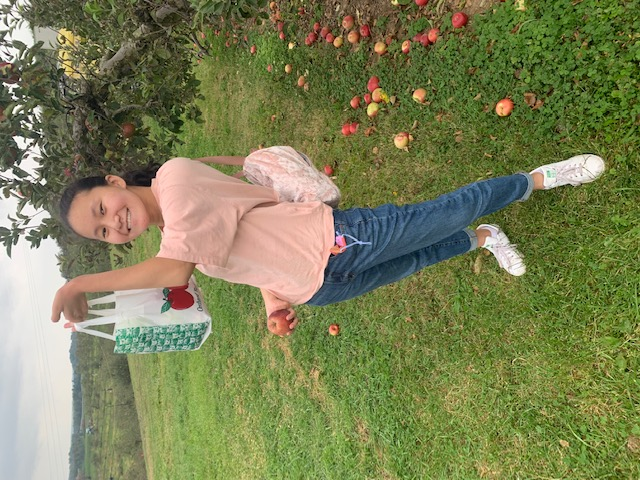
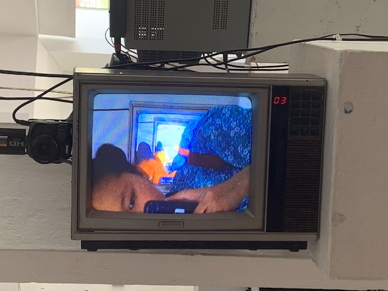
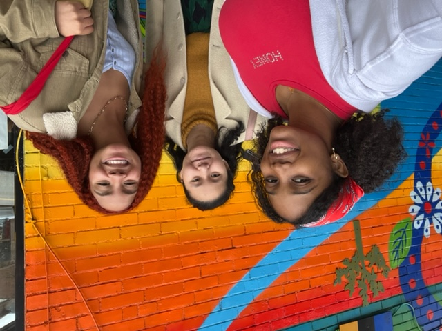
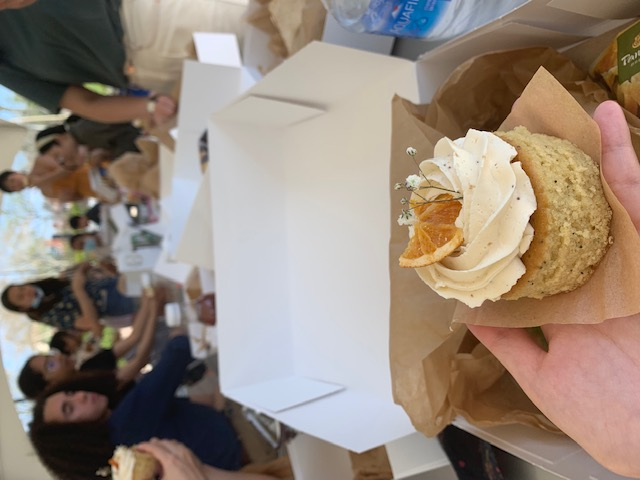
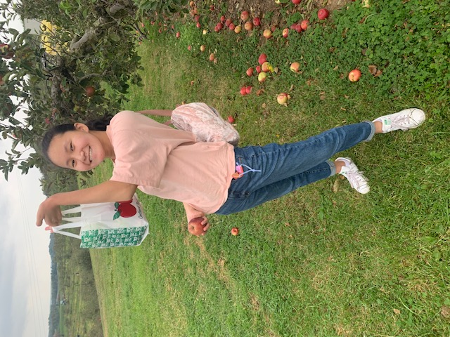
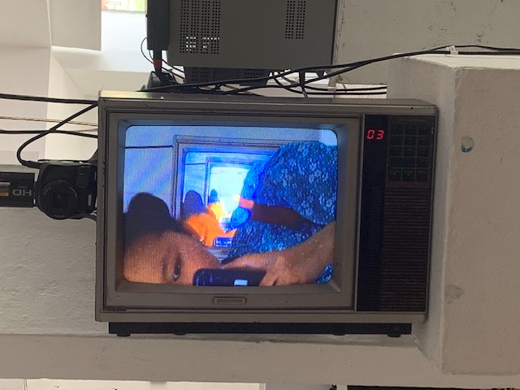

Hi there, I’m Phyllis
.
A sophomore studying Information Systems at Carnegie Mellon University,
I’m curious about how to design
effortless, accessible products with bold
personalities. Join meas I dive in — oh,
and wade through some code.
Work


TL;DR
Term project for Fund. of Programming and Computer Science
House Bayou
Client project under re:Bloom digital agency
Pamela’s Diner
Web development project for Information Systems Milieux
Big Straw Magazine
Article layoutsdesigned for Big Straw Magazine
About
My life in Pittsburgh, PA
 








Look closer — there's a cat :)
How I got here
Born in Tallahassee, Florida, and raised in Dayton, Ohio, I grew up
reading and writing with my head in the clouds. But while there
was much magic to be found in books, I quickly became engaged
with the magic in the world around me. As a layout designer for
my school’s magazine, I learned how the confluence of typography,
color, and structure could breathe life to an idea. As a student
journalist, I learned how to amplify others' voices through my writing,
while also elevating my own.
My foray into technology started with good ol’ AP Computer Science
Principles. Being a writer and a designer opened up many pathways
for me to make a difference; in this course, I caught a glimpse of
sprawling new pathways — doors opening into places where technology,
design, and advocacy intersected. This led me to my major, Information
Systems, which represents the kind of human-centric, forward-thinking
work I’ve always wanted to pursue.
 What I’m up to now
What I’m up to now
I’m a layout designer and writer for Carnegie Mellon’s
sole Asian-focused publication, Big Straw Magazine, as well as a
member of UXA and Design for America. Currently, I'm busy with the sophomore year,
participating in Meta’s Design Summit, brushing
up on some algorithms / data structures — and, of course, slogging
through my never-ending reading list.
Speaking of books, I just finished A Tale for the Time Being by
Ruth Ozeki! As for TV, I’ve been watching House of the Dragon,
His Dark Materials, and Brooklyn 99.
Some favorite things
Woodwick candles; boba and chai tea; visiting cat cafes; fluffy blankets; every pasta imaginable; spicy salmon rolls; cute brunch places; sunsets after storms; turning off the alarm; antics with friends; Song of Achilles by Madeline Miller.